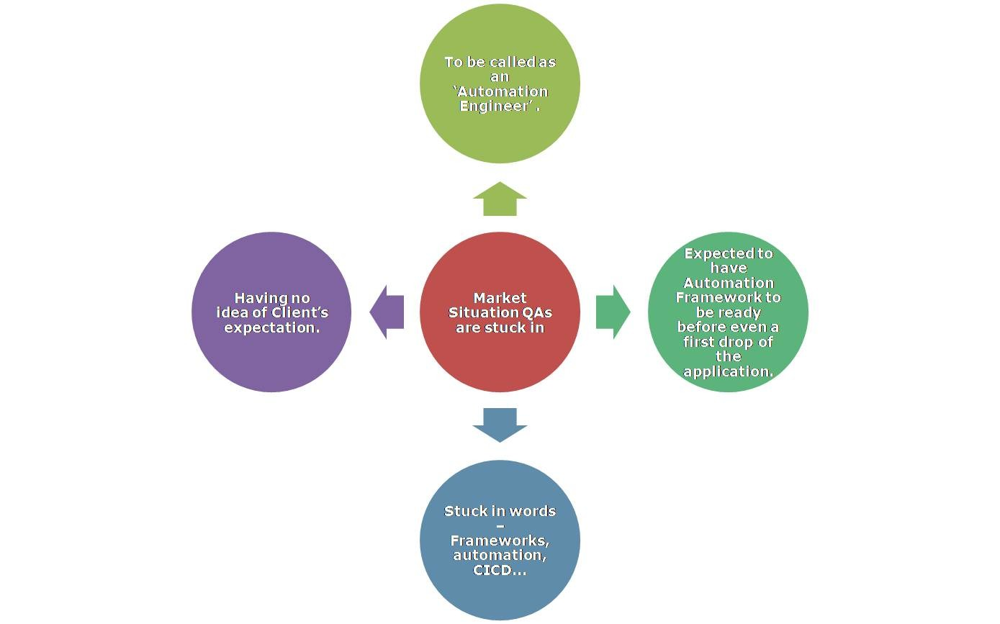
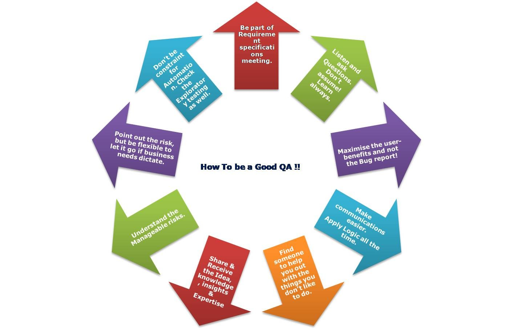

How to be a good QA!
I know.. You must be thinking that we are good; if we would have been bad, we would have been in some other profession by this time. We do all the assigned work, we follow agile, we automate everything, we create beautiful bug reports, we send the daily & weekly status, we finish the story points in time.. Well, there is more to know and keep in mind.
Believe me, everyone has got different circumstances.. It depends on the employer and the need of the work QA have got skills in. But at the end of the day, everything boils down to Quality & cost and then the extension of the contract and so-called performance ratings.. (at least in my case)!
This article discusses how a QA could be a value add to the SDLC process and not just someone who limits themselves to breaking the app.
This article is going to have sequels for sure!
Who is QA and why QA :
A QA performs different types of tests, provides edge cases to account for, identifies bugs, analyses the software to ensure Quality and signs off the story stating everything is working. A Quiet release sounds like a great success for them!
Their job: Application of common sense and functional knowledge.
Remember, a QA needn’t just get attention only when something is broken! Good QAs matter to Business. (Refer Who is QA ;))
What QA is not :
-
Not limiting oneself to theoretical concepts of -
what is ‘Software Testing’ or what do you mean by ‘Quality Assurance’ or ‘50 interview questions to crack a testing interview for a tester’!
-
Not there just to break the application. Please spare yourself from this!
-
Not just writing automation tests. Any junior developer can write this once given an automation framework!
Market Situations that QAs are sometimes stuck in :
To be called an ‘Automation Engineer’.
Having no idea of Client’s expectation.
Stuck in words – Frameworks, automation, CICD…
Expected to have Automation Framework to be ready before even a first drop of the application.

These days there is too much of buzz about Automation engineer profile when hiring - for implementing DevOps & CICD and to find the regression defects quicker.
But hiring an Automation engineer doesn’t really help if the person you are hiring can only develop an automation framework and use it..
Try to find out, even if the person is or is not an automation QA, will the person be able to understand the product and gel up in the team and be a value add to the team as in a cake-icing!
For e.g. –
-
an Automation QA should also be able to actually think about edge cases and set up automation for those, otherwise even junior devs can be asked to write automation cases!
-
able to understand and dig out the root cause.
-
able to decide what to priorities based on project needs, vs sticking to an older schedule
-
able to Prevent the defects rather than rushing up the bug report.
Keep in mind that - Technical tests, the automated one, don’t replicate the desire of users to click where they’re not supposed to, and can’t accommodate irrational human behaviors.
How to be a good QA :

QA is really about problem solving and mindset. The technical skills are easy to learn if you have the right analytic mindset and if you wish to! (For e.g., one may not want to switch from Java to CSharp)
Whenever you are in a situation and you don’t know what to do about it, find someone to help you out with the things you don’t like to do. For e.g. If you don’t understand something (e.g. some UI techniques, API), then ask for help.
You don’t have to be perfect in everything, just try to put in effort in any possible way to have a Quality product.
At the end of the day, one has to support development & Business team with what they need - with manual or automation or being QA and BA both, whatever!
The best QA for any team should be a fit for a company’s culture and areas of expertise.
I’ll say it again as I said in my other article on LinkedIn “Finding Defects vs Preventing Defects” , be the part of Requirement Specifications meetings. This will help you be on the same page as everyone else and contribute toward quicker & smoother releases.
When everyone discusses it together, everyone knows what’s expected.
QAs can help too much in refining your ACs. Everyone wants to deliver the software at scale, speed and profit. So, have QAs in all discussions.
- Open yourself to the unexpected. Be prepared to test new concepts. e.g. You may be skilled at UI testing but may have to also test API. Always find the opportunity to learn in all unexpected situations.
- Adapt to Visual Validation. When it comes to UI/UX - Human Eye can capture much more than any tool!
- Data is important. Stub it / virtualise it /mock it, if the dev is not ready. They are faster, effective and robust. This helps in identifying defects earlier rather than waiting for legacy systems to provide you data for all possible scenarios.
- Don’t run after raising the defects and pointing out developers mistake/Error. If a QA can work along with the Dev, can find the bugs first hand, and maybe dev can fix it immediately(on the fly) rather than going through the whole process of raising and closing the defect, nothing better than this!
Well, that doesn’t mean you should not raise the bugs. You should!
Raise the ones – which will have the biggest impact for the user. Well, it’s when you understand the manageable Risk!
- You have to maximize the user-benefits and not the bug report!
- Think in the abstract and see how small details fit into the bigger picture.
- Point out the risk, but be flexible enough to let it go if business needs dictate.
- Apply logic all the time. Ask Questions. Don’t assume.
- Technology – You should be given latest tools to be better at your job!
- Don’t limit yourself to just Automation testing. Check my article on Exploratory testing as well.
- Share the knowledge, ideas and insights. Don’t be mean to other QAs :)
- Always think End to End for each kind of Testing. Be it API, UI, DB (Unit, Service, Behavior tests). Think Functional and nonfunctional aspects at all times.
- Use automation to speed up the release process and reduce repetition, yet realize that exploratory testing is the foundation of high-quality testing.
- Write the Tests that everyone can use. (everyone can understand.. As in Dev, BA, PO.. everyone on the team)
- Do not think about the quantity of automated tests. Focus instead on the quality of the customer experience.
- Thoroughly document issues to minimize the time it takes a developer to resolve them. Provide steps & logs. I prefer giving all the logs so that the dev doesn’t really have to put extra efforts in reproducing and then finding the exact errors. Splunk, PCF, Appcentre.. Put the logger and you will see all sort of logs.
- Get involved in multiple stages of a product life-cycle or the SDLC - so that you provide faster feedback which would help in Preventing the defects and thus saving the cost!
- Go to Testing conferences, QA Meetups.
Don’t lose yourself in the buzzwords.. Be a value add.. Understand your customer and the manageable risks! And You are there! :)